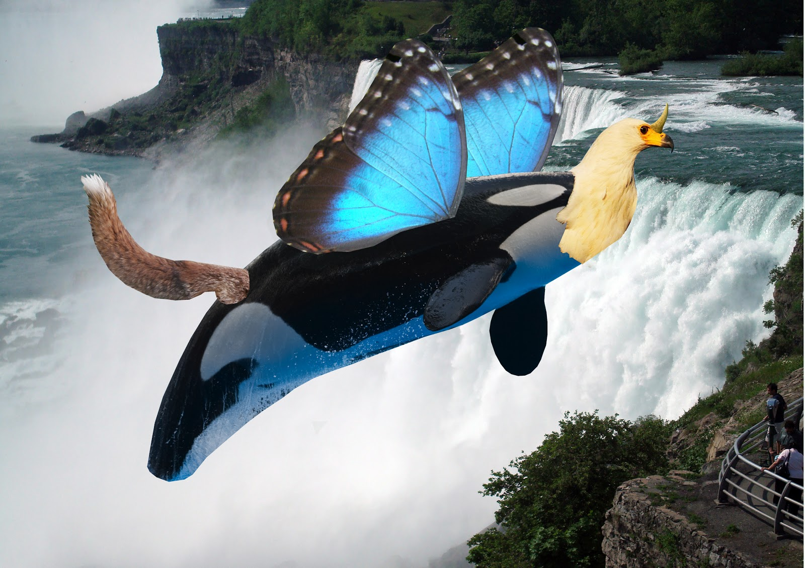

Cork

Keith McGrath
Types of Multimedia Today
Depending on your definition of multimedia, there are anywhere from hundreds of unique types of multimedia to around a dozen. The term "multimedia" originated in the art world, as a way to describe artwork that used several different media, such as charcoal, collage, video, or music. Its meaning grew more general, and it now refers to any combination of information content including words, pictures, animation, video, audio, and interactivity.
Multimedia on Television
Perhaps the most common place to see multimedia is on your television screen. Television segments often combine animation, words, and video to present their message. Often, television stations have staffs that create their multimedia graphics and animation. People who create this type of multimedia are called broadcast designers.
Multimedia Websites
Websites are the second major place where multimedia is used. For example, a news site offers written articles that describe the events of the day. It also might include slide shows, audio clips of speeches or news broadcasts, video coverage of major events, and animation that illustrates news topics. Multimedia web designers are responsible for organizing and presenting the multimedia content on their sites.
Multimedia Information Kiosks
Another form of multimedia often seen at places like airports and stores is the information kiosk. Before interactive technology because widespread, these kiosks consisted of a variety of maps and perhaps an attendant who could offer more specific information. Today, many kiosks are fully automated and interactive. Users select from a series of onscreen choices to find the information they need.
Multimedia has the same goals and uses as other types of media. It disperses information in the most clear, helpful way possible. As people become comfortable with multimedia, they will find that it is an essential tool that can make their lives easier.